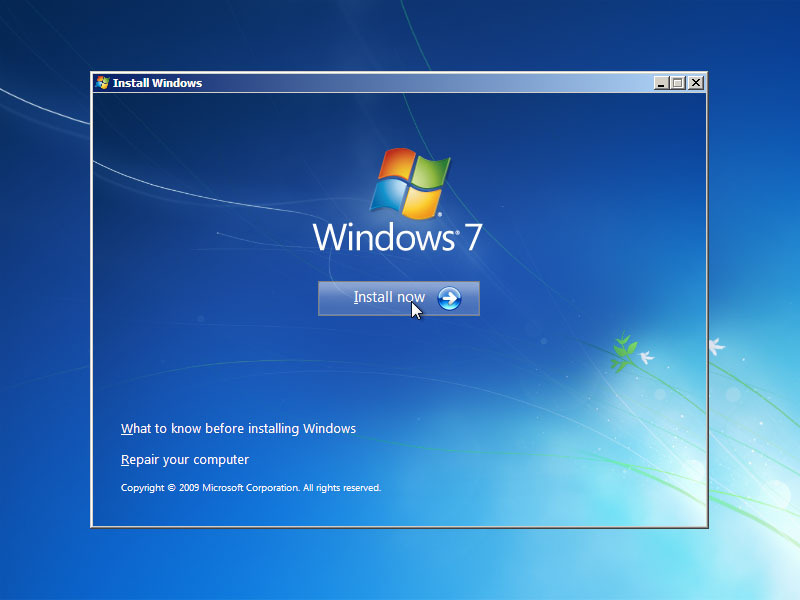
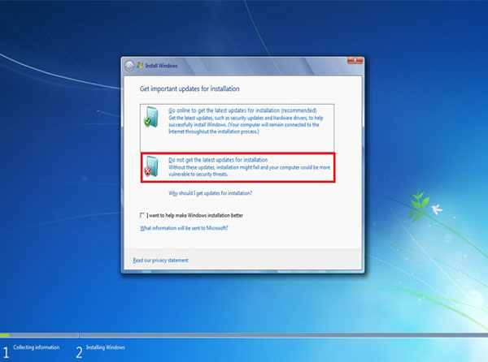
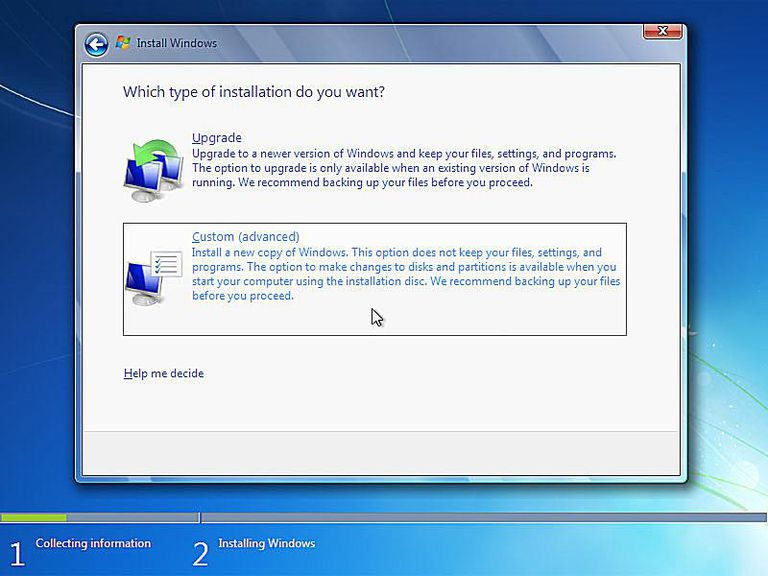
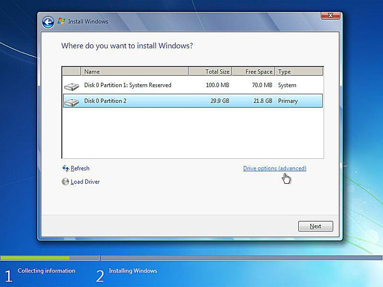
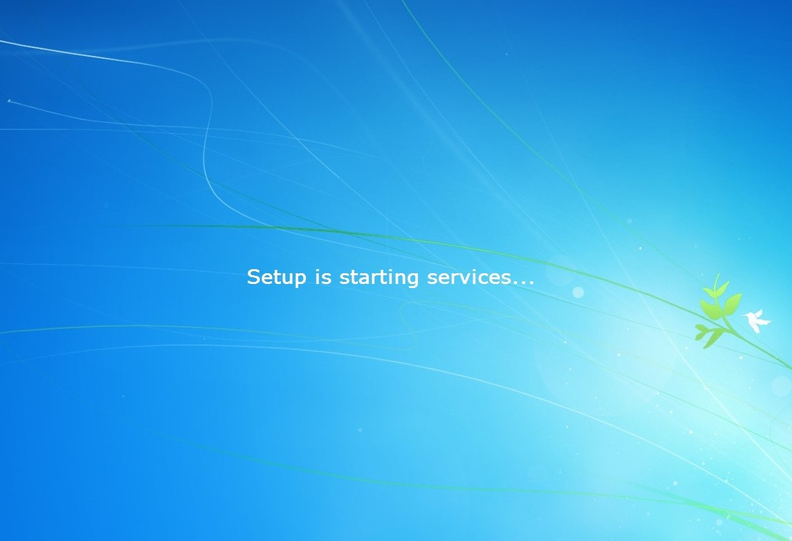
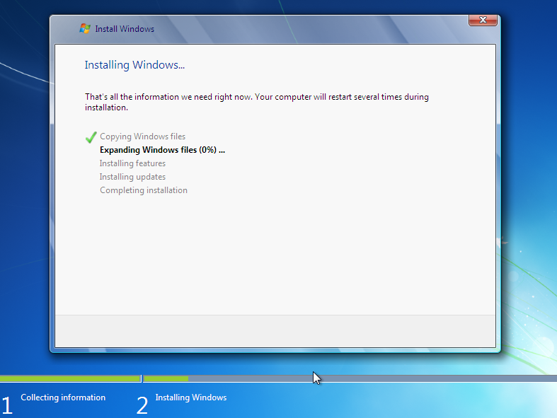

Pe calculatorul meu am instalat, pentru prima dată, un Windows 7 Ultimate. De ce pentru prima dată? Pentru că pȃnă acum, cȃnd am avut probleme cu PC-ul l-am dus la service, iar acum am vrut să ȋncerc cum e să fac acest lucru... ȋnainte mi se părea o chestie foarte complicată, care poate dura și jumatăte de zi... Dar nu e așa. :) Am vazut-o pe pielea mea, iar eu vă voi ȋmpărtăși ceea ce am făcut.
De ce ai nevoie?
- sistem de operare
- Stick USB sau CD/DVD

Mai ȋntȃi am creat un stick bootabil. Pentru aceasta
am cam umblat la BIOS. Pentru cei ce nu știu, BIOS-ul
este un software de nivel scăzut, fiind primul program
ce rulează atunci cȃnd porniți calculatorul. Pentru a ȋnțelege
mai bine ce ȋnseamnă software de nivel scăzut, ar trebui să știți
ca programele instalate pe sistemul dvs, cum ar fi navigatorul
de Internet, programele de redare media sau programele din suita
Office sunt programe de nivel ȋnalt, deoarece interacționează cu
sistemul de operare. Sistemul de operare este un software de nivel
mediu, deoarece interacționează cu resursele sistemului prin drivere
și prin BIOS. BIOS-ul este un software de nivel scăzut deoarece
controlează ȋn mod direct modul ȋn care funcționează componentele calculatorului.

Imediat cum porneste calculatorul, apăsăm F2/F8/F11/F12/Del/Esc
ce tasta tb apăsătă pentru BIOS sau pentru BOOT)-> "Boot" ->
"First boot device"/ "Boot device priority" sau ȋn secțiunea BOOT
căutați orice are legătură cu dispozitivul de unde să se lansese
sistemul-> apare o listă cu dispozitive pentru boot-are și se pune
CD-ROM, DVD-ROM sau USB pe primul loc, astfel ȋncȃt calculatorul
să pornească de pe acel dispozitiv -> se salvează modificările
și se iese din BIOS. Astfel, se restaurează calculatorul.
Apoi, pentru cine nu are soft cu licență, poate crea stick-ul bootabil.
Intr-adevăr, se poate crea și un CD/DVD bootabil, dar stick-ul este
mult mai avantajos deoarece nu te mai complici atȃt de mult cȃnd faci
acest lucru. Ȋntȃi de toate căuți și descărcați o imagine ISO care
conține sistemul de operare dorit, ȋn acest caz Windows 7,
Windows 8, Windows 10 etc. Apoi instalați Windows 7 USB DVD Download Tool
(care merge numai pentru Windows7 și care este un program care
este de la cei de la Microsoft și care vă ajută să creați un stick bootabil).
Windows 7 USB DVD Download Tool ȋl puteți descărca de aici.

Windows 7 USB DVD Download Tool este extrem de ușor de folosit.
Trebuie să urmați patru pași simpli, să apăsați de cȃteva ori butonul ”Next”.
Primul pas, după ce deschideți aplicația, este alegerea imaginii
ISO a kit-ului de instalare. Trebuie doar să dați ”Browse” și
să selectați fișierul respectiv iar aceasta va apărea ȋn cȃmpul ”Source file”.

Al doilea pas este alegerea mediului pe care vor fi copiate
fișierele necesare. Puteți alege ȋntre un stick USB și o unitate DVD.
Pentru stick USB, apăsăți butonul ”USB device”.
Ȋn pasul trei trebuie să selectăți din listă stick-ul USB dorit.
Ȋn funcție de numărul de harddisk-uri, partiții sau unități optice,
acestea pot purta litera E sau F sau G etc. și apoi apăsați butonul
”Begin Copying”. Pasul patru constă doar ȋn indicatorul grafic care
va arăta cȃt mai are pȃnă termină de copiat fișierele pe stick-ul USB.
După ce s-a finalizat implmentarea SO-ului pe USB sau DVD,
puteți ȋncerca instalarea sistemului pe calculator.

Avȃnd configurațiile BIOS-ului setate pentru bootarea
de pe unitate de stocare externă, n-ar mai trebui decȃt
să deschideți calculatorul, asigurȃndu-vă că aveți deja inserat
USB-ul, respective DVD-ul bootabil.

Va apărea o interfața dedicată, de unde puteți selecta limba,
timpul și metoda de introducere. Apoi, după ce vom da “next”,
vom da “install” -> bifăm pentru acceptarea termenilor și condiților,
iar pentru o posibilă formatare, vom da “Custom(advanced)”.
HDD-ul este o parte fizică a computerului ce stochează date,
iar patițile divid drive-ul ȋn mai multe parții. Dacă Hard discul
are data pe el, este recomandat să le ștergeți ori să-l formatați
(selectați drive-ul din listă, click pe “Drive options (advanced)”-> “Format”).
Dacă PC-ul nu are partiții ȋncă, puteți crea una odată cu instalarea SO-ului
sau cu ajutorul unui program special.

După cum spuneam, putem crea partiții odată cu instalarea sistemului astfel:
Selectați Hard Drive-ul din listă, click “ Drive Options (advanced)”->
->”New”-> selectați mărimea și apoi “OK”. Apoi “Next” și se instalează sistemul.
Procesul va dura aproximativ o oră. Și după ce s-a făcut instalarea și configurarea
datei, orei, locației, limbii etc., ca sistemul de calcul să funcționeze optim,
este recomandat să instalați driverele corespunzătoare.
Driverul este un program care face legătura ȋntre component hard și soft.
Și de asemenea, să nu uităm nici de datele stocate. La instalare puteți
sau nu să formatați calculatorul, iar dacă o faceți, asigurați-vă că ați
făcut și un back-up al datelor.
Cam asta e tot. Sper că v-am fost de ajutor. Ȋn partea laterală, aveți imagini cu instalarea pe pași (primul sus, următorul la următorul paragraf etc.) cu instalarea sistemului, după configurația BIOS-ului și procurarea sistemului, respectiv crearea USB-ului bootabil.